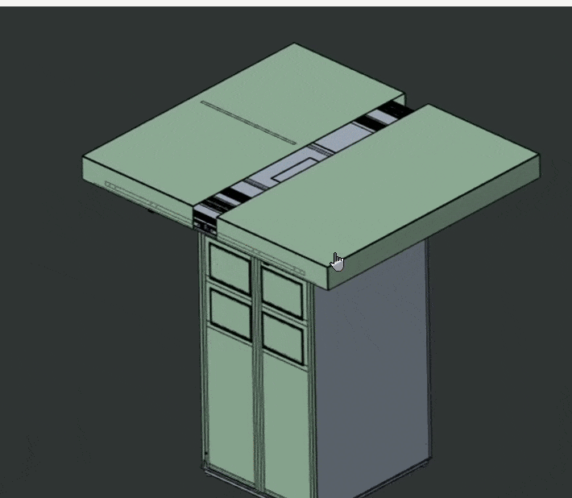
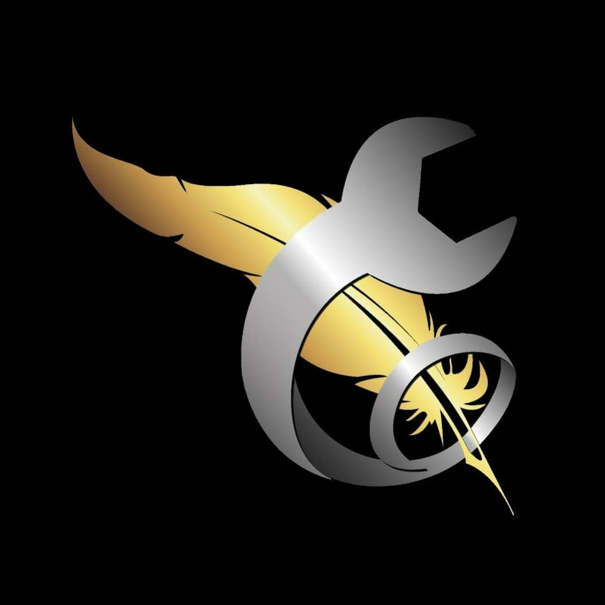

My Internships

Mechanical Design Intern — Reude Technologies (May 2025 - July 2025)
Conducted system feasibility analysis for Canopus drone pod. Worked on design calculations for packaging lifting mechanism, conveyor mechanism, and redesign of the conveyor system.

Robotics Intern — iHub Drishti (June 2024 - Aug 2024)
Developed simulations in ROS and Gazebo for Clearpath Husky UGV. Benchmarked vSLAM methods (Monocular, Stereo, Inertial variants) using ORB-SLAM3.

Intern — Insights Autotech Consultants (May 2023 - Sept 2023)
Worked on mechanical design, market research, and sales strategy. Gained experience in production planning and process optimization.
Back to Home